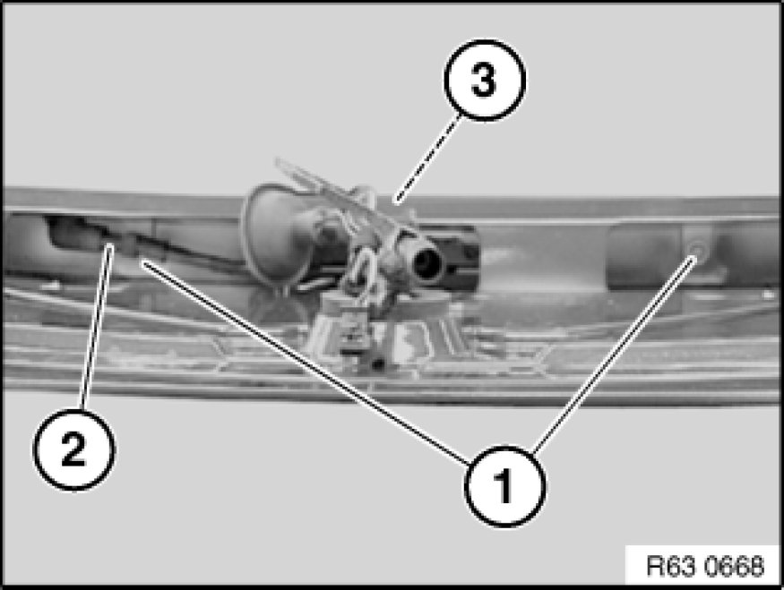
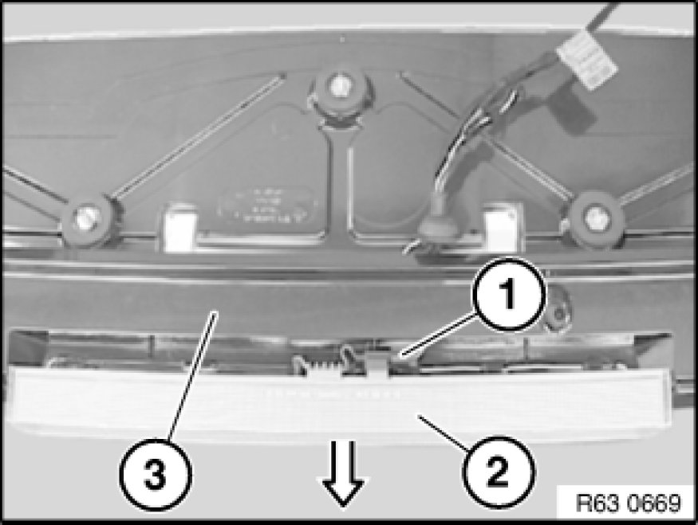
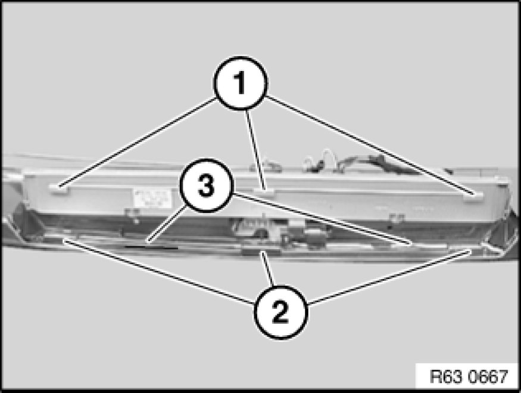

Removing and Installing/Replacing Auxiliary Brake Light
63 25 000 - Removing and installing/replacing auxiliary brake light

Necessary preliminary tasks:
- Remove rear spoiler 51 71 412 Removing and Installing Rear Spoiler

Release screws (1). Tightening torque 63 21 5AZ Rear Light Unit.
Installation:
Make sure hose (2) is correctly seated.
Slide additional stop light (3) slightly towards rear out of rear spoiler.

Disconnect plug connection (1).
Feed auxiliary brake light (2) in direction of arrow out of rear spoiler (3).

Installation:
Guides (1) must be exactly seated in locators (2).
Make sure wiring harness (3) is laid correctly.